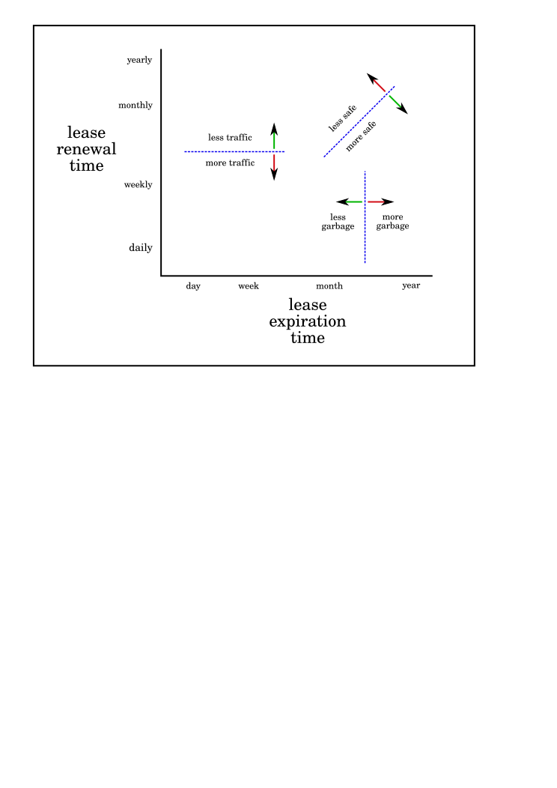

Garbage Collection in Tahoe¶
Overview¶
When a file or directory in a Tahoe-LAFS file store is no longer referenced, the space that its shares occupied on each storage server can be freed, making room for other shares. Tahoe currently uses a garbage collection (“GC”) mechanism to implement this space-reclamation process. Each share has one or more “leases”, which are managed by clients who want the file/directory to be retained. The storage server accepts each share for a pre-defined period of time, and is allowed to delete the share if all of the leases expire.
Garbage collection is not enabled by default: storage servers will not delete shares without being explicitly configured to do so. When GC is enabled, clients are responsible for renewing their leases on a periodic basis at least frequently enough to prevent any of the leases from expiring before the next renewal pass.
There are several tradeoffs to be considered when choosing the renewal timer and the lease duration, and there is no single optimal pair of values. See the following diagram to get an idea of the tradeoffs involved:

If lease renewal occurs quickly and with 100% reliability, than any renewal time that is shorter than the lease duration will suffice, but a larger ratio of duration-over-renewal-time will be more robust in the face of occasional delays or failures.
The current recommended values for a small Tahoe grid are to renew the leases
once a week, and give each lease a duration of 31 days. In the current
release, there is not yet a way to create a lease with a different duration,
but the server can use the expire.override_lease_duration configuration
setting to increase or decrease the effective duration (when the lease is
processed) to something other than 31 days.
Renewing leases can be expected to take about one second per file/directory, depending upon the number of servers and the network speeds involved.
Client-side Renewal¶
If all of the files and directories which you care about are reachable from a
single starting point (usually referred to as a “rootcap”), and you store
that rootcap as an alias (via “tahoe create-alias” for example), then the
simplest way to renew these leases is with the following CLI command:
tahoe deep-check --add-lease ALIAS:
This will recursively walk every directory under the given alias and renew
the leases on all files and directories. (You may want to add a --repair
flag to perform repair at the same time.) Simply run this command once a week
(or whatever other renewal period your grid recommends) and make sure it
completes successfully. As a side effect, a manifest of all unique files and
directories will be emitted to stdout, as well as a summary of file sizes and
counts. It may be useful to track these statistics over time.
Note that newly uploaded files (and newly created directories) get an initial
lease too: the --add-lease process is only needed to ensure that all
older objects have up-to-date leases on them.
A separate “rebalancing manager/service” is also planned – see ticket #543. The exact details of what this service will do are not settled, but it is likely to work by acquiring manifests from rootcaps on a periodic basis, keeping track of checker results, managing lease-addition, and prioritizing repair and rebalancing of shares. Eventually it may use multiple worker nodes to perform these jobs in parallel.
Server Side Expiration¶
Expiration must be explicitly enabled on each storage server, since the
default behavior is to never expire shares. Expiration is enabled by adding
config keys to the [storage] section of the tahoe.cfg file (as described
below) and restarting the server node.
Each lease has two parameters: a create/renew timestamp and a duration. The
timestamp is updated when the share is first uploaded (i.e. the file or
directory is created), and updated again each time the lease is renewed (i.e.
“tahoe check --add-lease” is performed). The duration is currently fixed
at 31 days, and the “nominal lease expiration time” is simply $duration
seconds after the $create_renew timestamp. (In a future release of Tahoe, the
client will get to request a specific duration, and the server will accept or
reject the request depending upon its local configuration, so that servers
can achieve better control over their storage obligations.)
The lease-expiration code has two modes of operation. The first is age-based: leases are expired when their age is greater than their duration. This is the preferred mode: as long as clients consistently update their leases on a periodic basis, and that period is shorter than the lease duration, then all active files and directories will be preserved, and the garbage will collected in a timely fashion.
Since there is not yet a way for clients to request a lease duration of other
than 31 days, there is a tahoe.cfg setting to override the duration of all
leases. If, for example, this alternative duration is set to 60 days, then
clients could safely renew their leases with an add-lease operation perhaps
once every 50 days: even though nominally their leases would expire 31 days
after the renewal, the server would not actually expire the leases until 60
days after renewal.
The other mode is an absolute-date-cutoff: it compares the create/renew timestamp against some absolute date, and expires any lease which was not created or renewed since the cutoff date. If all clients have performed an add-lease some time after March 20th, you could tell the storage server to expire all leases that were created or last renewed on March 19th or earlier. This is most useful if you have a manual (non-periodic) add-lease process. Note that there is not much point to running a storage server in this mode for a long period of time: once the lease-checker has examined all shares and expired whatever it is going to expire, the second and subsequent passes are not going to find any new leases to remove.
The tahoe.cfg file uses the following keys to control lease expiration:
[storage]
expire.enabled = (boolean, optional)
If this is
True, the storage server will delete shares on which all leases have expired. Other controls dictate when leases are considered to have expired. The default isFalse.
expire.mode = (string, "age" or "cutoff-date", required if expiration enabled)
If this string is “age”, the age-based expiration scheme is used, and the
expire.override_lease_durationsetting can be provided to influence the lease ages. If it is “cutoff-date”, the absolute-date-cutoff mode is used, and theexpire.cutoff_datesetting must be provided to specify the cutoff date. The mode setting currently has no default: you must provide a value.In a future release, this setting is likely to default to “age”, but in this release it was deemed safer to require an explicit mode specification.
expire.override_lease_duration = (duration string, optional)
When age-based expiration is in use, a lease will be expired if its
lease.create_renewtimestamp plus itslease.durationtime is earlier/older than the current time. This key, if present, overrides the duration value for all leases, changing the algorithm from:if (lease.create_renew_timestamp + lease.duration) < now: expire_lease()to:
if (lease.create_renew_timestamp + override_lease_duration) < now: expire_lease()The value of this setting is a “duration string”, which is a number of days, months, or years, followed by a units suffix, and optionally separated by a space, such as one of the following:
7days 31day 60 days 2mo 3 month 12 months 2yearsThis key is meant to compensate for the fact that clients do not yet have the ability to ask for leases that last longer than 31 days. A grid which wants to use faster or slower GC than a 31-day lease timer permits can use this parameter to implement it.
This key is only valid when age-based expiration is in use (i.e. when
expire.mode = ageis used). It will be rejected if cutoff-date expiration is in use.
expire.cutoff_date = (date string, required if mode=cutoff-date)
When cutoff-date expiration is in use, a lease will be expired if its create/renew timestamp is older than the cutoff date. This string will be a date in the following format:
2009-01-16 (January 16th, 2009) 2008-02-02 2007-12-25The actual cutoff time shall be midnight UTC at the beginning of the given day. Lease timers should naturally be generous enough to not depend upon differences in timezone: there should be at least a few days between the last renewal time and the cutoff date.
This key is only valid when cutoff-based expiration is in use (i.e. when “expire.mode = cutoff-date”). It will be rejected if age-based expiration is in use.
expire.immutable = (boolean, optional)
If this is False, then immutable shares will never be deleted, even if their leases have expired. This can be used in special situations to perform GC on mutable files but not immutable ones. The default is True.
expire.mutable = (boolean, optional)
If this is False, then mutable shares will never be deleted, even if their leases have expired. This can be used in special situations to perform GC on immutable files but not mutable ones. The default is True.
Expiration Progress¶
In the current release, leases are stored as metadata in each share file, and no separate database is maintained. As a result, checking and expiring leases on a large server may require multiple reads from each of several million share files. This process can take a long time and be very disk-intensive, so a “share crawler” is used. The crawler limits the amount of time looking at shares to a reasonable percentage of the storage server’s overall usage: by default it uses no more than 10% CPU, and yields to other code after 100ms. A typical server with 1.1M shares was observed to take 3.5 days to perform this rate-limited crawl through the whole set of shares, with expiration disabled. It is expected to take perhaps 4 or 5 days to do the crawl with expiration turned on.
The crawler’s status is displayed on the “Storage Server Status Page”, a web page dedicated to the storage server. This page resides at $NODEURL/storage, and there is a link to it from the front “welcome” page. The “Lease Expiration crawler” section of the status page shows the progress of the current crawler cycle, expected completion time, amount of space recovered, and details of how many shares have been examined.
The crawler’s state is persistent: restarting the node will not cause it to lose significant progress. The state file is located in two files ($BASEDIR/storage/lease_checker.state and lease_checker.history), and the crawler can be forcibly reset by stopping the node, deleting these two files, then restarting the node.
Future Directions¶
Tahoe’s GC mechanism is undergoing significant changes. The global mark-and-sweep garbage-collection scheme can require considerable network traffic for large grids, interfering with the bandwidth available for regular uploads and downloads (and for non-Tahoe users of the network).
A preferable method might be to have a timer-per-client instead of a timer-per-lease: the leases would not be expired until/unless the client had not checked in with the server for a pre-determined duration. This would reduce the network traffic considerably (one message per week instead of thousands), but retain the same general failure characteristics.
In addition, using timers is not fail-safe (from the client’s point of view), in that a client which leaves the network for an extended period of time may return to discover that all of their files have been garbage-collected. (It is fail-safe from the server’s point of view, in that a server is not obligated to provide disk space in perpetuity to an unresponsive client). It may be useful to create a “renewal agent” to which a client can pass a list of renewal-caps: the agent then takes the responsibility for keeping these leases renewed, so the client can go offline safely. Of course, this requires a certain amount of coordination: the renewal agent should not be keeping files alive that the client has actually deleted. The client can send the renewal-agent a manifest of renewal caps, and each new manifest should replace the previous set.
The GC mechanism is also not immediate: a client which deletes a file will nevertheless be consuming extra disk space (and might be charged or otherwise held accountable for it) until the ex-file’s leases finally expire on their own.
In the current release, these leases are each associated with a single “node secret” (stored in $BASEDIR/private/secret), which is used to generate renewal-secrets for each lease. Two nodes with different secrets will produce separate leases, and will not be able to renew each others’ leases.
Once the Accounting project is in place, leases will be scoped by a sub-delegatable “account id” instead of a node secret, so clients will be able to manage multiple leases per file. In addition, servers will be able to identify which shares are leased by which clients, so that clients can safely reconcile their idea of which files/directories are active against the server’s list, and explicitly cancel leases on objects that aren’t on the active list.
By reducing the size of the “lease scope”, the coordination problem is made easier. In general, mark-and-sweep is easier to implement (it requires mere vigilance, rather than coordination), so unless the space used by deleted files is not expiring fast enough, the renew/expire timed lease approach is recommended.